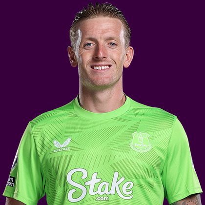

PITCHKEEP
Premier League ranks
Player File · GKP EVE · Premier #74

Jordan Pickford
GKP · Everton · age 32 · £5.5m
2025/26 Premier League
| Year | Starts | Min | G | A | xG | xA | CS | Saves | Bonus | YC | Sleeper | FPL |
|---|---|---|---|---|---|---|---|---|---|---|---|---|
| 2025/26 | 11 | 990 | 0 | 0 | 0.0 | 0.04 | 4 | 31 | 2 | 0 | 73.6 | 40 |
Plus
- 73.6 Sleeper BPL 2025 points (Pitch #18).
Minus
- Consensus 66.2 vs Sleeper #18 - the industry is cooler than last year's box score.
- Board spread 11-189 (The Independent Watchlist to FPL ICT Index).
PitchKeep Take · The Premier
Jordan Pickford is a goalkeeper for Everton, age 32, £5.5m. The Premier ranks him 74th overall by splitting Sleeper BPL 2025 (#18, 73.6 points) with the consensus of 5 other boards (66.2). Last year's Sleeper line ran 48 spots ahead of the expert/FPL mix. The third list keeps some of that production bump and refuses to throw the other boards out. That is the whole point of not just republishing The Pitch.
The 2025/26 line is 11 starts, 990 minutes, 31 saves, 4 clean sheets and 14 goals against. Official FPL scored it at 40 points (3.6 per match) with 2 bonus. Sleeper's table turned the same counting stats into 73.6. Keepers get 8 a clean sheet, 2 a save, and −2 a goal against. That is a different sport than FPL's 10-from-saves cap, and it is why this board ranks them at all.
Underlying: 0.0 xG, 0.04 xA, 0.04 xGI. The job is shot-stopping volume in front of whatever Everton is this year. 31 saves is the Sleeper case. 4 clean sheets is the FPL case. If the back line leaks, both numbers move together and this ranking goes with them. The friendliest board is The Independent Watchlist at 11; the coldest is FPL ICT Index at 189.
Market: £5.5m, 12 boards on the file. That is leftover money for a Premier-ranked name. If the minutes hold, this board already voted. FPL's own EP-next is 3.7. ICT 25.0.
Instruction: deep-league starter, shallow-league watchlist. The 2025/26 line got him onto the 400. A role change gets him off it. Watch minutes, not vibes. Nearby on The Premier: Tyrick Mitchell, James Garner, Jack Hinshelwood. Versus The Pitch (Sleeper-only #18), the hybrid moves him down to #74. That move is the third list doing its job.
He is 32, which on this board is neither a dart nor a warning label. Prime-age goalkeepers get ranked on what they just did and whether Everton still gives them the ball. 990 minutes says yes. The 2026/27 FPL price (£5.5m) is the app's guess at whether that continues. The Premier is the blend of that guess and the box score.
You start one goalkeeper. That positional cap is why The Premier will not put a saves leader in the overall top ten unless the consensus also shows up. Pickford's Sleeper line (73.6) already made The Pitch. The other boards (66.2) decide how far the hybrid lets him climb. Draft him as a keeper, not as an outfielder who happens to have gloves.
How to use the file: The Pitch is the Sleeper-only 400 (he is #18 there). The Premier is the 50/50 with every other board we track. Attack, Midfield, Defence, and Keepers re-rank the same Sleeper table by position. BK Value on this page follows The Premier when you are on the hybrid calculator and The Pitch when you are on the Sleeper calculator. Same curve either way - 12,000 at 1.01.
Sleeper vs FPL
Same 2025/26 line, two scoring tables
Board graph
Spread 11-189 · 12 sources
Tape · 2025/26 Premier League
The BEST Of Jordan Pickford | Impossible Saves
Every Board
Spread 11-189 · 12 sources
| Source | Rank |
|---|---|
| The Independent Watchlist | 11 |
| Sleeper BPL 2025 | 18 |
| FPL Ownership | 44 |
| RotoWire FPL 400 | 44 |
| The Athletic PL 50 | 50 |
| FPL 2025/26 Points | 77 |
| RotoWire Fantrax / Sleeper 400 | 78 |
| FPL EP Next | 90 |
| FPL Form | 94 |
| FPL Price Board | 136 |
| RotoWire GW1 | 148 |
| FPL ICT Index | 189 |
All players · The Premier · The Pitch · PK News · Calculator